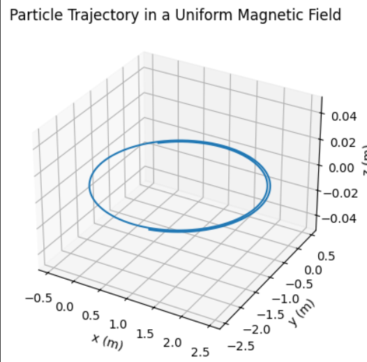

Lorentz Force Simulation
1. Motivation
The Lorentz force governs the motion of charged particles under electric and magnetic fields:
\[
\mathbf{F} = q\mathbf{E} + q\mathbf{v} \times \mathbf{B}
\]
It plays a crucial role in: - Particle accelerators - Plasma confinement systems (e.g., Tokamaks) - Mass spectrometers - Cosmic ray dynamics
2. Applications of the Lorentz Force
- Particle Accelerators: Use magnetic fields to bend charged particles into circular paths.
- Mass Spectrometry: Employs both electric and magnetic fields to separate ions by mass-to-charge ratio.
- Plasma Confinement: Magnetic fields trap hot plasma to maintain fusion conditions.
- Auroras and Cosmic Rays: Natural examples of charged particles interacting with Earth's magnetic field.
3. Simulation Overview
We simulate the motion of a charged particle using numerical integration. We explore: - Uniform magnetic field - Combined electric and magnetic fields - Crossed fields (orthogonal \(\mathbf{E}\) and \(\mathbf{B}\))
4. Python Code
import numpy as np
import matplotlib.pyplot as plt
# Constants
q = 1.0 # charge (C)
m = 1.0 # mass (kg)
B = np.array([0, 0, 1.0]) # uniform magnetic field (T)
E = np.array([0.0, 0.0, 0.0]) # electric field (V/m)
# Initial state
r0 = np.array([0.0, 0.0, 0.0]) # position (m)
v0 = np.array([1.0, 1.0, 0.0]) # velocity (m/s)
# Time parameters
dt = 0.01
T = 10
steps = int(T / dt)
# Arrays to store data
positions = np.zeros((steps, 3))
velocities = np.zeros((steps, 3))
positions[0] = r0
velocities[0] = v0
# Euler integration
for i in range(steps - 1):
v = velocities[i]
F = q * (E + np.cross(v, B))
a = F / m
velocities[i+1] = v + a * dt
positions[i+1] = positions[i] + velocities[i+1] * dt
# Plot trajectory
fig = plt.figure()
ax = fig.add_subplot(111, projection='3d')
ax.plot(positions[:, 0], positions[:, 1], positions[:, 2])
ax.set_title("Particle Trajectory in a Uniform Magnetic Field")
ax.set_xlabel("x (m)")
ax.set_ylabel("y (m)")
ax.set_zlabel("z (m)")
plt.show()

5. Observations
- In a uniform magnetic field, the particle follows a circular or helical path depending on the initial velocity.
- The radius of the circular motion (Larmor radius) is:
\[
r_L = \frac{mv_{\perp}}{qB}
\]
- With an electric field present, drift motion occurs:
\[
\mathbf{v}_d = \frac{\mathbf{E} \times \mathbf{B}}{B^2}
\]
6. Extensions
- Introduce non-uniform fields: \(\mathbf{B}(x, y, z)\) and/or \(\mathbf{E}(x, y, z)\).
- Use Runge-Kutta methods for improved accuracy.
- Add relativistic corrections for high-speed particles.
- Simulate multiple particles for beam dynamics or collective effects.